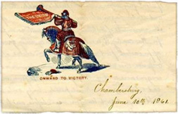
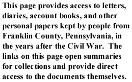

|  |  |
To search select personal papers by keyword, author, or subject,
go to the letters or diaries search pages.
This collection of eight postwar letters (1867-1869) concerns Brewer's public and business affairs. Topics include war claims, wills, and education. Some of Brewer's correspondents include D. M. Dull, William Hoke, James Patton, P. T. Zarhoviy, William Hayman, W. D. McKinstry, and George Welsh. You may also read Brewer's wartime letters (1864).
In this letter to his parents, dated May 18, 1865, J. Milton Crawford describes the conditions near Appomattox, where General Lee had just surrendered his army the month before. He also writes about the poor conditions endured by Union soldiers.
This collection contains five postwar letters (1865) of the Demus and Christy families. Topics include mustering out, postwar plans, Confederate soldiers, and escaping slaves. These letters provide a view into the concerns of an African American family in the immediate aftermath of war. You may also read the wartime letters (1863-1865) of the Demus and Christy families.
Jubal A. Early writes to Edmund Jennings Lee II on September 26, 1872 about the burning of Montgomery Blair's house during Confederate incursions into Maryland and Pennsylvania. Early acknowledges responsibility for burning places like Chambersburg, PA, but denies that he had anything to do with the burning of Blair's house.
In this letter to his wife dated July 5, 1865, David Hafer discusses family matters and the possibility of returning home to Chambersburg soon. Within a week, Hafer had been mustered out.
After the war, Alexander K. McClure continued his involvement in Republican politics. McClure continued his longtime correspondence with Eli Slifer, Secretary of the Commonwealth under Governor Andrew Gregg Curtin, in the years after the war. These postwar letters primarily concern political matters, including discussions of election campaigning and proposed legislation.
Harriet McElheney lived in Fannett Township in Franklin County, Pennsylvania. In this letter dated May 10, 1865, Francis Pleasants describes to Harriet McElheney her husband Sylvester's last days. You may also read the wartime letters (1864-1865) of the McElheney family.
Anna Mellinger was the young wife of a Franklin County farmer. She kept this postwar diary (1865-1866) where she details life on her family's farm, the weather, and the deaths of a few neighbors.
The Stouffers were a devoutly religious family who lived in Guilford Township in Franklin County, Pennsylvania. In this letter postwar letter (1865) to his family, Benjamin Stouffer discusses Lincoln's assassination and the subsequent reaction from the public in Poughkeepsie, New York.